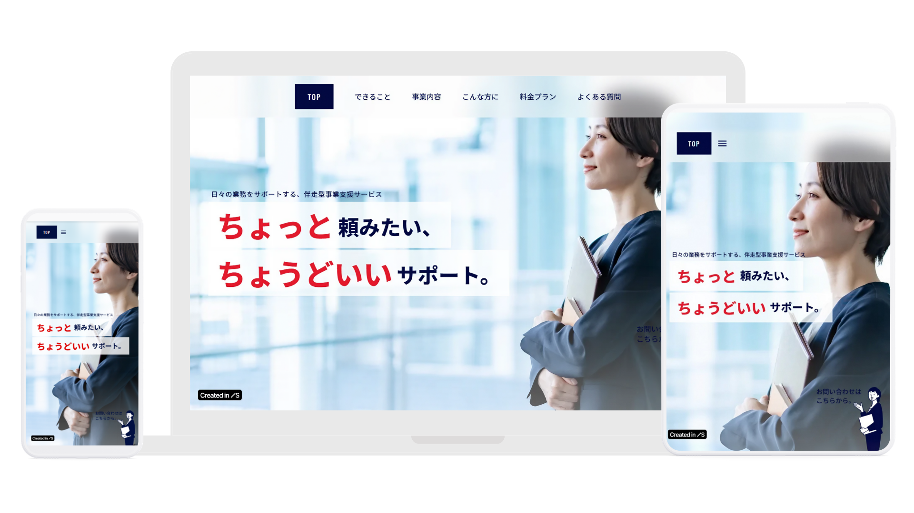

Website
ちょっと頼みたい、ちょうどいいサポート。
「ちょっと頼みたい、ちょうどいいサポート。」をコンセプトに、日々の業務をサポートする伴走型事業支援サービスのPRサイトを、ノーコードツールのStudioで制作しました。

About
この作品について
Project
ちょっと頼みたい、ちょうどいいサポート。
Date
2025年6月
Tool
Studio / Canva / Photoshop
URL
Target & Purpose
特定の業種・客層に偏らない、幅広い事業者の皆様(日々の業務でスポット的なサポートを必要とする経営者・担当者)に向けたサービスです。誰でも自分ごととして捉えやすいメッセージ設計とし、気軽に「お問い合わせ」へとつながることを目的としています。
Design Concept
PC・タブレット・スマートフォンいずれの端末でも快適に閲覧できるレスポンシブデザインを採用し、追従型のヘッダーメニューによって訪問者が迷わず目的の情報にたどり着ける、ストレスフリーなUI/UX(操作性・使い心地)を設計しました。配色は白背景×ネイビーのフォントカラーでクリーンかつ誠実な印象を構築し、幅広い層に響く「信頼感」を演出。アクセントカラーの赤で「お問い合わせ」などの重要アクションを効果的に促しています。また、実写の人物写真ではなくあえてシンプルな線画イラストを採用することで、見る人が自身を投影しやすい、ニュートラルで温かみのある世界観を表現しました。
Links